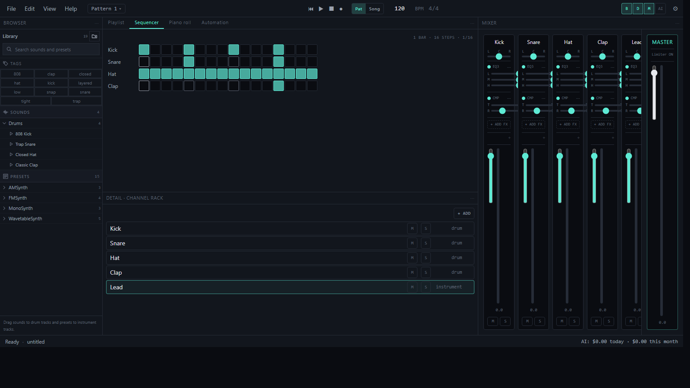

A DAW that stays out of your way, and helps when you ask.
BeatForge is a fullscreen, AI-assisted desktop DAW for Windows — sequencer, piano roll, mixer, and automation, with an AI assistant that runs on your own OpenRouter key.

Everything a track needs
Built as one instrument, not a bundle of plugins.
Step sequencer
Channel rack with per-step velocity and mutes; patterns arranged in the playlist.
Piano roll
Quantize, humanize, and chord entry for fast, expressive MIDI.
Playlist & arrangement
Pattern and audio clips on one timeline, drag to arrange a full song.
Mixer & effects
EQ, compressor, reverb, delay, chorus, distortion, multiband, sends and buses.
Automation lanes
Draw curves over any parameter, synced to the arrangement.
Recording & import
Record audio or import WAV, then trim, split, fade and gain non-destructively.
VST3 instruments
Scan and audition installed VST3 instruments on Windows (experimental).
Export
WAV, MP3, and MIDI export, with live playback and export kept in parity.
AI, on your terms
Assistance for drum patterns, melodies, mix suggestions and sample picking — nothing runs without your say.
- Bring your own OpenRouter API key — BeatForge never charges you or resells access.
- Choose a model per feature: drums, melody, mixing, and sample search can each use a different model.
- Cost shown per call before and after it runs, with a running total.
- Set a budget; BeatForge stops calling out once you hit it.
Built to not lose your work
Saving is atomic, autosave keeps three recovery slots, and what you hear while working is what gets exported.
- Atomic project saves — a crash mid-write can't corrupt your file.
- Autosave keeps three recovery slots, offered back on next launch.
- Live playback and export render through the same audio path.
- No silent surprises between what you mixed and what you shipped.
Download
- Platform
- Windows 10/11, x64
- Price
- Free
- Latest
- v0.1.0
The installer is unsigned, so Windows SmartScreen will warn you on first run. Click "More info" → "Run anyway" to continue. SHA-512 checksums are listed in latest.yml on the release.